- 00 开篇词 为什么你要学习编译原理？.md
- 01 理解代码：编译器的前端技术.md
- 02 正则文法和有限自动机：纯手工打造词法分析器.md
- 03 语法分析（一）：纯手工打造公式计算器.md
- 04 语法分析（二）：解决二元表达式中的难点.md
- 05 语法分析（三）：实现一门简单的脚本语言.md
- 06 编译器前端工具（一）：用Antlr生成词法、语法分析器.md
- 07 编译器前端工具（二）：用Antlr重构脚本语言.md
- 08 作用域和生存期：实现块作用域和函数.md
- 09 面向对象：实现数据和方法的封装.md
- 10 闭包： 理解了原理，它就不反直觉了.md
- 11 语义分析（上）：如何建立一个完善的类型系统？.md
- 12 语义分析（下）：如何做上下文相关情况的处理？.md
- 13 继承和多态：面向对象运行期的动态特性.md
- 14 前端技术应用（一）：如何透明地支持数据库分库分表？.md
- 15 前端技术应用（二）：如何设计一个报表工具？.md
- 16 NFA和DFA：如何自己实现一个正则表达式工具？.md
- 17 First和Follow集合：用LL算法推演一个实例.md
- 18 移进和规约：用LR算法推演一个实例.md
- 19 案例总结与热点问题答疑：对于左递归的语法，为什么我的推导不是左递归的？.md
- 20 高效运行：编译器的后端技术.md
- 21 运行时机制：突破现象看本质，透过语法看运行时.md
- 22 生成汇编代码（一）：汇编语言其实不难学.md
- 23 生成汇编代码（二）：把脚本编译成可执行文件.md
- 24 中间代码：兼容不同的语言和硬件.md
- 25 后端技术的重用：LLVM不仅仅让你高效.md
- 26 生成IR：实现静态编译的语言.md
- 27 代码优化：为什么你的代码比他的更高效？.md
- 28 数据流分析：你写的程序，它更懂.md
- 29 目标代码的生成和优化（一）：如何适应各种硬件架构？.md
- 30 目标代码的生成和优化（二）：如何适应各种硬件架构？.md
- 31 内存计算：对海量数据做计算，到底可以有多快？.md
- 32 字节码生成：为什么Spring技术很强大？.md
- 33 垃圾收集：能否不停下整个世界？.md
- 34 运行时优化：即时编译的原理和作用.md
- 35 案例总结与热点问题答疑：后端部分真的比前端部分难吗？.md
- 36 当前技术的发展趋势以及其对编译技术的影响.md
- 37 云编程：云计算会如何改变编程模式？.md
- 38 元编程：一边写程序，一边写语言.md
- 加餐 汇编代码编程与栈帧管理.md
- 用户故事 因为热爱，所以坚持.md
- 第二季回归 这次，我们一起实战解析真实世界的编译器.md
- 结束语 用程序语言，推动这个世界的演化.md
30 目标代码的生成和优化（二）：如何适应各种硬件架构？
前一讲，我带你了解了指令选择和寄存器分配，本节课我们继续讲解目标代码生成的，第三个需要考虑的因素：指令重排序（Instruction Scheduling）。
我们可以通过重新排列指令，让代码的整体执行效率加快。那你可能会问了：就算重新排序了，每一条指令还是要执行啊？怎么就会变快了呢？
别着急，本节课我就带你探究其中的原理和算法，来了解这个问题。而且，我还会带你了解LLVM是怎么把指令选择、寄存器分配、指令重排序这三项工作组织成一个完整流程，完成目标代码生成的任务的。这样，你会对编译器后端的代码生成过程形成完整的认知，为正式做一些后端工作打下良好的基础。
首先，我们来看看指令重排序的问题。
指令重排序
如果你有上面的疑问，其实是很正常的。因为我们通常会把CPU看做一个整体，把CPU执行指令的过程想象成，依此检票进站的过程，改变不同乘客的次序，并不会加快检票的速度。所以，我们会自然而然地认为改变顺序并不会改变总时间。
但当我们进入CPU内部，会看到CPU是由多个功能部件构成的。下图是Ice Lake微架构的CPU的内部构成（从Intel公司的技术手册中获取）：
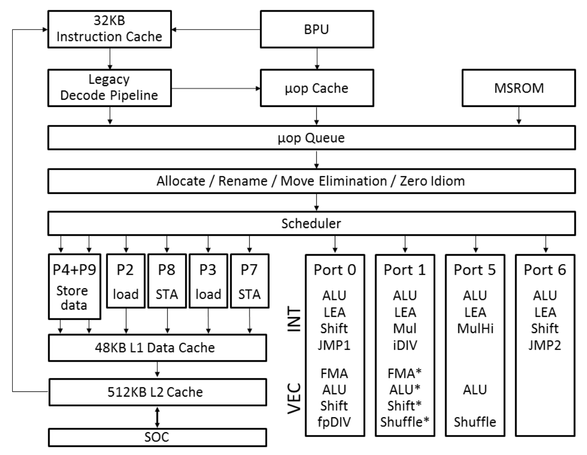
在这个结构中，一条指令执行时，要依次用到多个功能部件，分成多个阶段，虽然每条指令是顺序执行的，但每个部件的工作完成以后，就可以服务于下一条指令，从而达到并行执行的效果。这种结构叫做流水线（pipeline）结构。我举例子说明一下，比如典型的RISC指令在执行过程会分成前后共5个阶段。
- IF：获取指令；
- ID（或RF）：指令解码和获取寄存器的值；
- EX：执行指令；
- ME（或MEM）：内存访问（如果指令不涉及内存访问，这个阶段可以省略）；
- WB：写回寄存器。
对于CISC指令，CPU的流水线会根据指令的不同，分成更多个阶段，比如7个、10个甚至更多。
在执行指令的阶段，不同的指令也会由不同的单元负责，我们可以把这些单元叫做执行单元，比如，Intel的Ice Lake架构的CPU有下面这些执行单元：
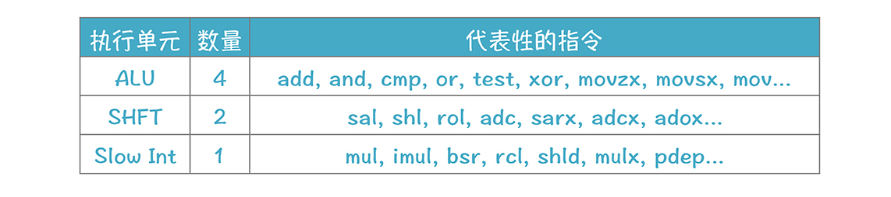
其他执行单元还有：BM、Vec ALU、Vec SHFT、Vec Add、Vec Mul、Shuffle等。
因为CPU内部存在着多个功能单元，所以在同一时刻，不同的功能单元其实可以服务于不同的指令，看看下面这个图；
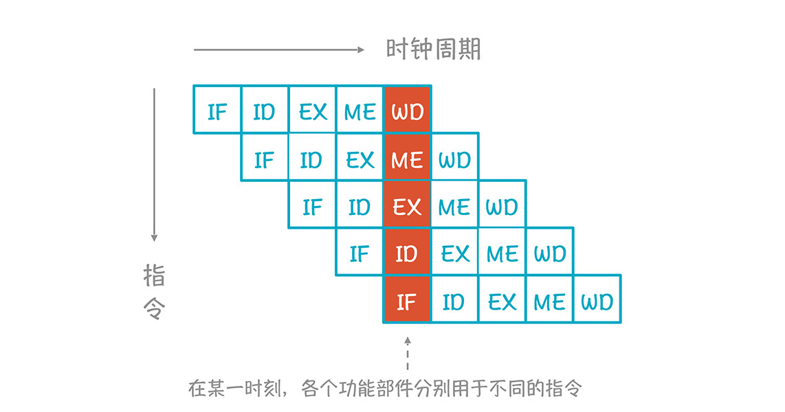
这样的话，多条指令实质上是并行执行的，从而减少了总的执行时间，这种并行叫做指令级并行：
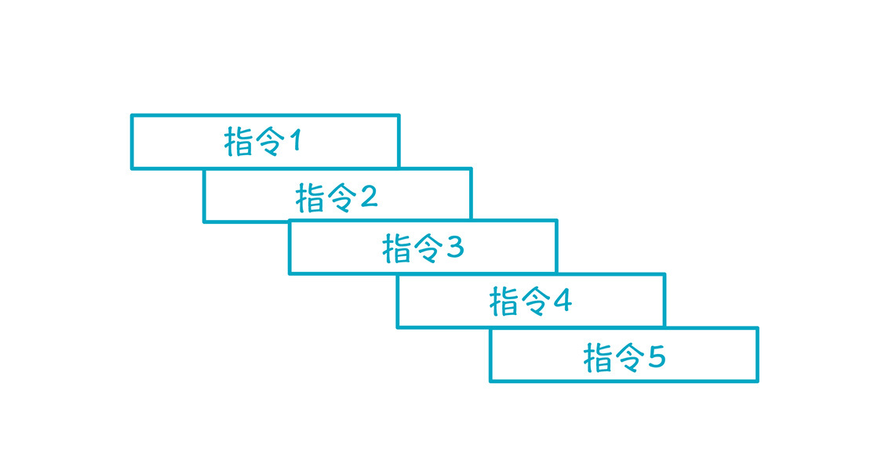
如果没有这种并行结构，或者由于指令之间存在依赖关系，无法并行，那么执行周期就会大大加长：
我们来看一个实际的例子。
为了举例子方便，我们做个假设：假设load和store指令需要3个时钟周期来读写数据，add指令需要1个时钟周期，mul指令需要2个时钟周期。
图中橙色的编号是原来的指令顺序，绿色的数字是每条指令开始时的时钟周期，你把每条指令的时钟周期累计一下就能算出来。最后一条指令开始的时钟周期是20，该条指令运行需要3个时钟周期，所以在第22个时钟周期执行完所有的指令。右边是重新排序后的指令，一共花了13个时钟周期。这个优化力度还是很大的！
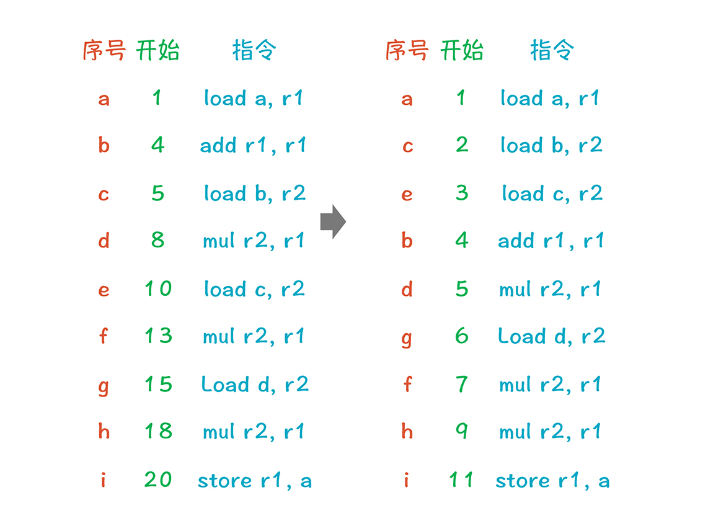
仔细看一下左边前两条指令，这两条指令的意思是：先加载数据到寄存器，然后做一个加法。但加载需要3个时钟周期，所以add指令无法执行，只能干等着。
右列的前三条都是load指令，它们之间没有数据依赖关系，我们可以每个时钟周期启动一个，到了第四个时钟周期，每一条指令的数据已经加载完毕，所以就可以执行加法运算了。
我们可以把右边的内容画成下面的样子，你能看到，很多指令在时钟周期上是重叠的，这就是指令级并行的特点。
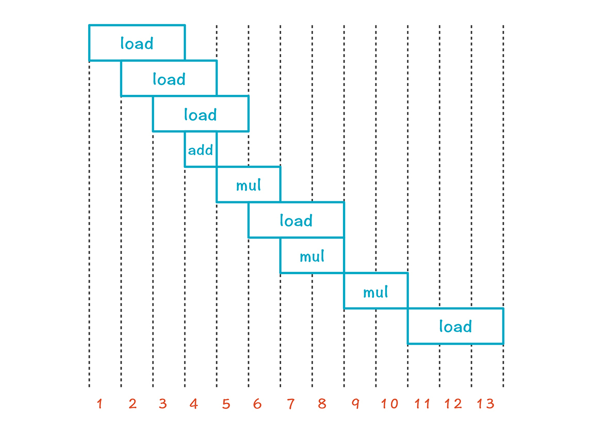
当然了，不是所有的指令都可以并行，最后的3条指令就是顺序执行的，导致无法并行的原因有几个：
- 数据依赖约束
如果后一条指令要用到前一条指令的结果，那必须排在它后面，比如下面两条指令：add和mul。
对于第二条指令来说，除了获取指令的阶段（IF）可以和第一条指令并行以外，其他阶段需要等第一条指令的结果写入r1，第二条指令才可以使用r1的值继续运行。
add r2, r1
mul r3, r1
- 功能部件约束
如果只有一个乘法计算器，那么一次只能执行一条乘法运算。
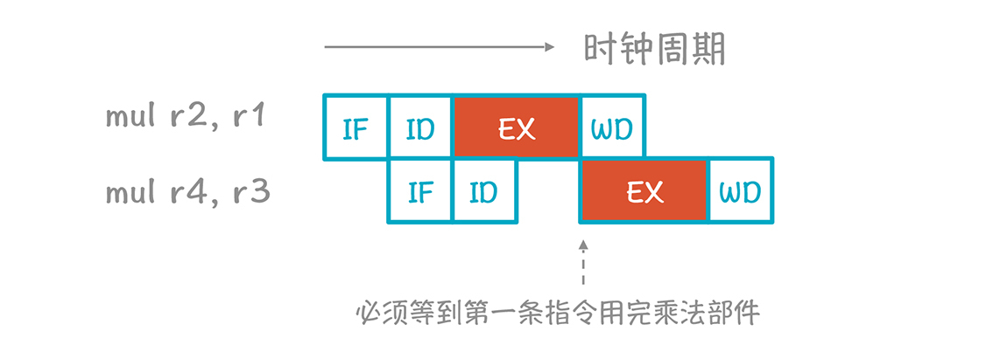
- 指令流出约束
指令流出部件一次流出n条指令。
- 寄存器约束
寄存器数量有限，指令并行时使用的寄存器不可以超标。
后三者也可以合并成为一类，称作资源约束。
在数据依赖约束中，如果有因为使用同一个存储位置，而导致不能并行的，可以用重命名变量的方式消除，这类约束被叫做伪约束。而先写再写，以及先读后写是伪约束的两种呈现方式：
先写再写：如果指令A写一个寄存器或内存位置，B也写同一个位置，就不能改变A和B的执行顺序，不过我们可以修改程序，让A和B写不同的位置。
先读后写：如果A必须在B写某个位置之前读某个位置，那么不能改变A和B的执行顺序。除非能够通过重命名让它们使用不同的位置。
以上就是指令重排序的原理，掌握这个原理你就明白为什么重排序可以提升性能了，不过明白原理之后，我们还有能够用算法实现出来才行。
用算法排序的关键点，是要找出代码之间的数据依赖关系。下图展现了示例中各行代码之间的数据依赖，可以叫做数据的依赖图（dependence graph）。它的边代表了值的流动，比如a行加载了一个数据到r1，b行利用r1来做计算，所以b行依赖a行，这个图也可以叫做优先图（precedence graph），因为a比b优先，b比d优先。
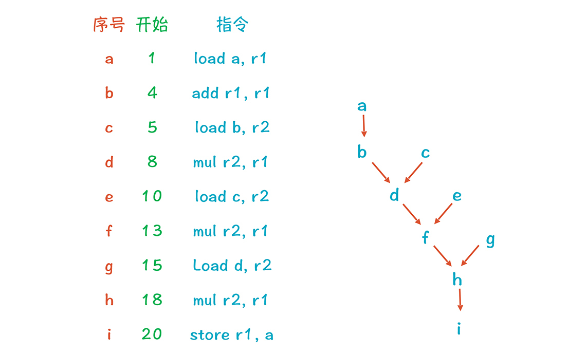
我们可以给图中的每个节点再加上两个属性，利用这两个属性，就可以对指令进行排序了：
- 一是操作类型，因为这涉及它所需要的功能单元。
- 二是时延属性，也就是每条指令所需的时钟周期。
图中的a、c、e、g是叶子，它们没有依赖任何其他的节点，所以尽量排在前面。b、d、f、h必须出现在各自所依赖的节点后面。而根节点i，总是要排在最后面。
根据时延属性，我们计算出了每个节点的累计时延（每个节点的累计时延等于父节点的累计时延加上本节点的时延）。其中a-b-d-f-h-i 路径是关键路径，代码执行的最少时间就是这条路径所花的时钟周期之和。
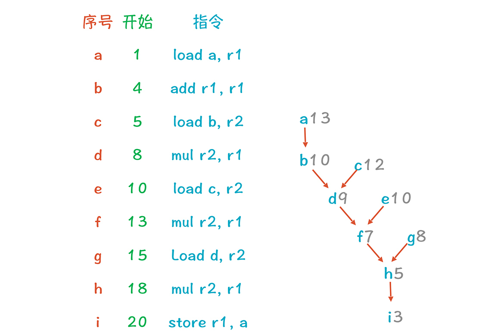
因为a在关键路径上，所以首先考虑把a节点排在第1行。
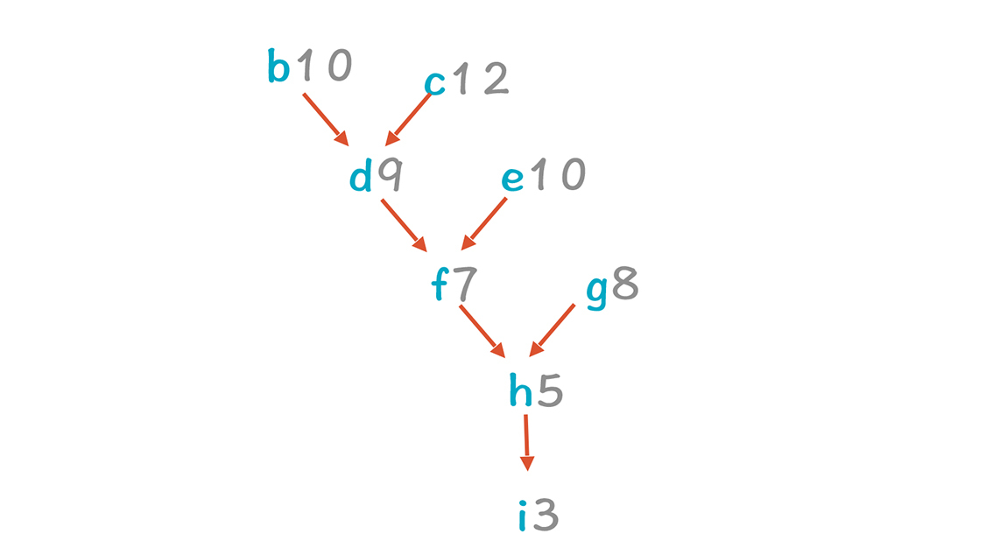
剩下的树中，c-d-f-h-i变成了关键路径，因为c的累计时延最大。c节点可以排在第2行。
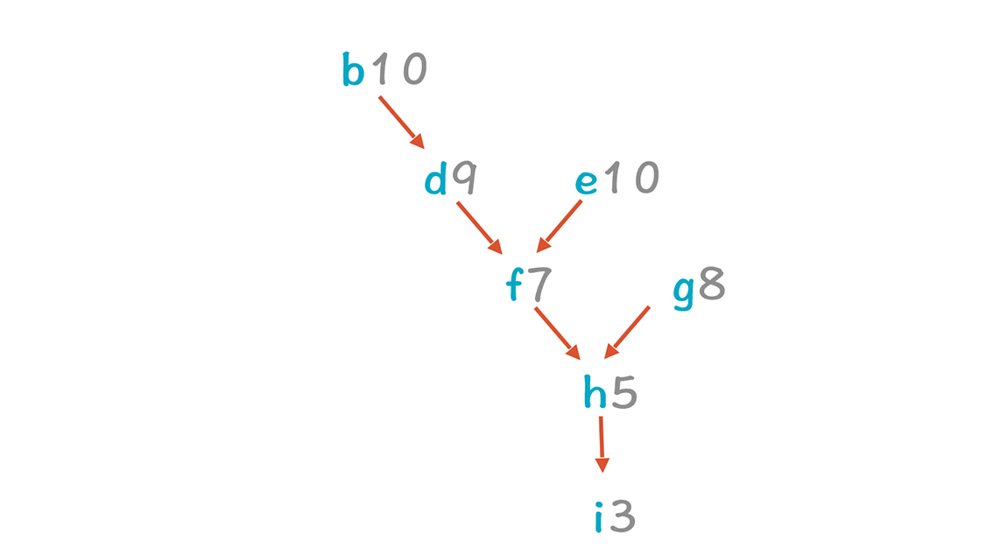
b和e的累计时延都是最长的，但由于b必须在a执行完毕后，才会开始执行，所以最好等够a的3个时钟周期，否则还是会空等，所以先不考虑b，而是把e放到第3行。
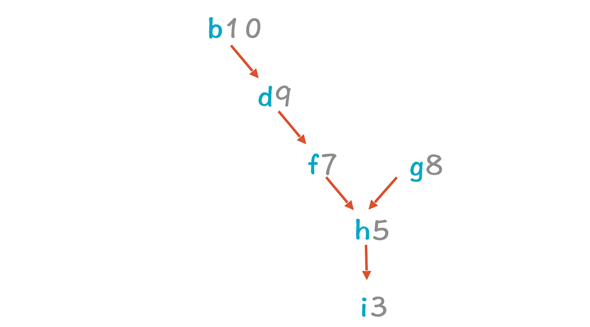
继续按照这个方式排，最后可以获得a-c-e-b-d-g-f-h-i的指令序列。不过这个代码其实还可以继续优化：也就是发现并消除其中的伪约束。
c和e都向r2里写了值，而d使用的是c写入的值。如果修改变量名称，比如让e使用r3寄存器，我们就可以去掉e跟d，以及e与c之间伪约束，让e就可以排在c和d之前。同理，也可以让g使用r4寄存器，使得g可以排在e和f的前面。当然了，在这个示例中，这种改变并没有减少总的时间消耗，因为关键路径上的依赖没有变化，它们都使用了r1寄存器。但在别的情况下，就有可能带来更大的优化。
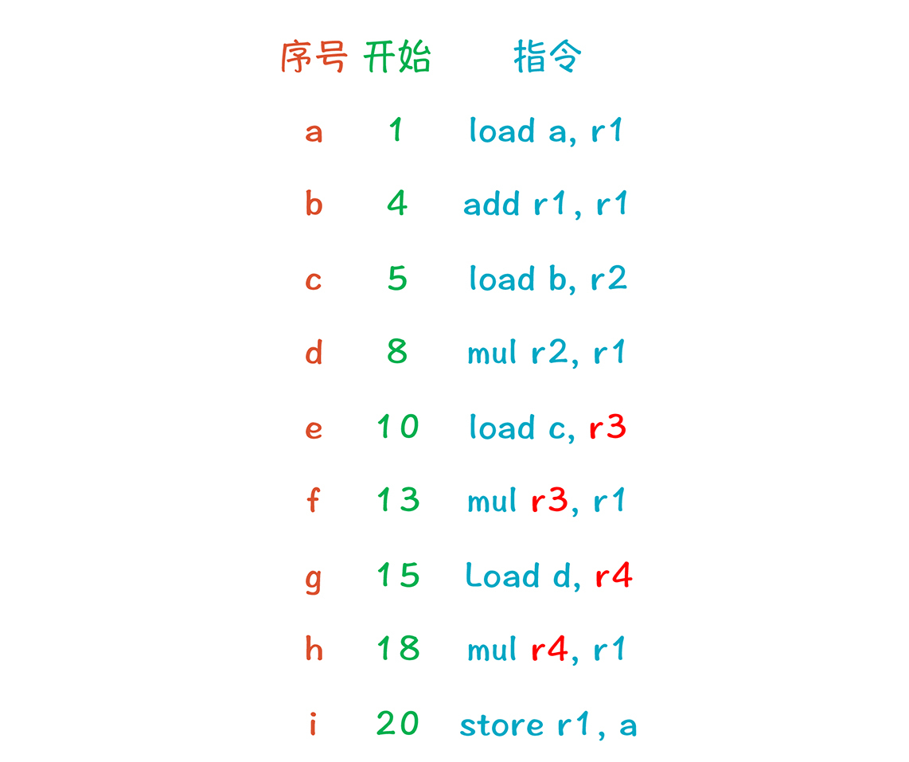
我们刚才其实是采用了一种最常见的算法，List Scheduling算法，大致分为4步：
1.把变量重命名来消除伪约束（可选步骤）。- 2.创建依赖图。- 3.为每行代码计算优先值（计算方法可以有很多，比如我们示例中基于最长时延的方法就是一种）。- 4.迭代处理代码并排序。
除了List Scheduling算法以外，还有其他的算法，这里我就不展开了。不过，讲到算法时，我们需要考虑算法的复杂度。前一讲讲算法时，我没有提这个问题，是想在这里集中讲一下。
这两节课中，关于指令选择、寄存器分配和指令重排序的算法，其难度（时间复杂度）都是“NP-完全”的。“NP-完全”是什么意思呢？也就是这类问题找不到一个随规模（代码行数）计算量增长比较慢的算法（多项式时间算法）来找到最优解。反之，有可能计算量会随着代码行数呈指数级上升。因此，编译原理中的一些难度最高的算法，都在代码生成这一环。
当然了，找最优解太难，我们可以退而求其次，找一个次优解。就比如我们用地图软件导航的时候，没必要要求导航路径每次都是找到最短的。这时，就会有比较简单的算法，计算量不会随规模增长太快，但结果还比较理想。我们这两讲的算法都是这个性质的。
到目前为止，我带你了解了目标代码生成的三大考虑因素：指令选择、寄存器分配和指令重排序。现在，我们来看看目标代码生成，在LLVM中是如何实现的，这样，你能从概念过渡到实操，从而把知识点掌握得更加扎实。
LLVM的实现
LLVM的后端需要多个处理步骤来生成目标代码：
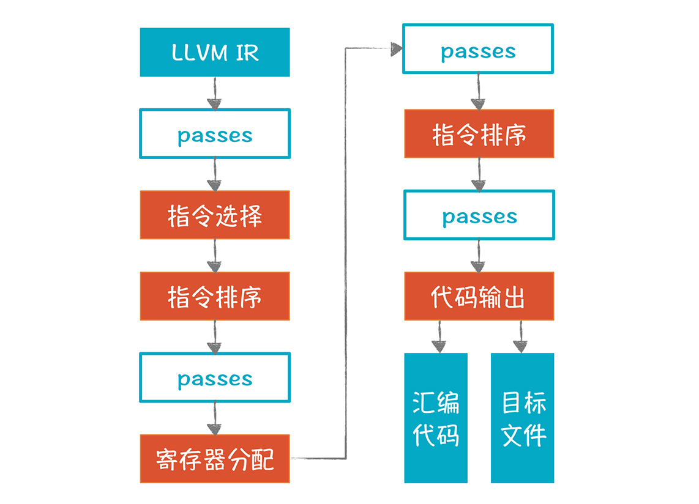
图中橙色的部分是重要的步骤，它本身包含了多个Pass，所以也叫做超级Pass。图中蓝框的Pass，是用来做一些额外的优化处理（关于LLVM的Pass机制，我在27讲提到过，如果你忘记了，可以回顾一下）。
接下来，我来讲解一下LLVM生成目标代码的关键步骤。
- 指令选择
LLVM的指令选择算法是基于DAG（有向无环图）的树模式匹配，与前一讲基于AST的算法有一些区别，但总思路是一致的（具体算法描述可以参见这篇论文）。这个算法是Near-Optimal（接近Optimal）的，能够在线性的时间内完成指令的选择，并且它特别关注产生的代码的尺寸，要求尺寸足够小。
DAG是融合了公共子表达式的AST，也是一种结构化的IR。下面两行代码对应的AST和DAG分如图所示，你能看到，DAG把a=5这棵子树给融合了：
a = 5
b = (2 + a）+ (a * 3)
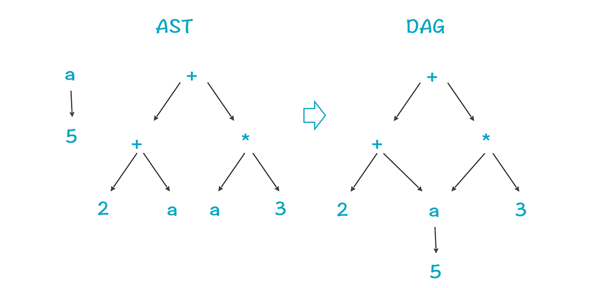
LLVM把内存中的IR模型，转化成了一个体现了某个目标平台特征的SelectionDAG，用于做指令选择。每个基本块转化成一个DAG，DAG中的节点通常代表指令，边代表指令之间的数据流动。
在这个阶段之后，LLVM会把DAG中的LLVM IR节点，全部转换成目标机器的节点，代表目标机器的指令，而不是LLVM的指令。
- 指令排序（寄存器分配之前）
基于前一步的处理结果，我们要对指令进行排序。但因为DAG不能反映没有依赖关系的节点之间的排序，所以LLVM要先把DAG转换成一种三地址模式，这个格式叫做MachineInstr。这个阶段会把指令排序，并尽量发挥指令级并行的能力。
- 寄存器分配
接下来做寄存器的分配。LLVM的IR支持无限多的寄存器，在这个环节要分配到实际的寄存器上，分配不下的就溢出到内存。
- 指令排序（寄存器分配之后）
分配完寄存器之后，LLVM会再做一次指令排序。因为寄存器分配，会指定确定的寄存器，而访问不同的寄存器的时钟周期，可能是不同的。对于溢出到内存中的变量，也增加了一些指令在内存和寄存器之间传输数据。利用这些信息，LLVM可以进一步优化指令的排序。
- 代码输出
做完上面的所有工作后，就可以输出目标代码了。
LLVM在这一步把MachineInstr格式转换为MCInst格式，因为后者更有利于汇编器和链接器输出汇编代码或二进制目标代码。
在这里，我想延伸一下，和你探讨一个问题：如果现在有一个新的CPU架构，要实现一个崭新的后端，来支持各种语言，应该怎么做。
在我国大力促进芯片研发的背景下，这是一个值得探讨的问题，新芯片需要编译器的支持才可以呀。你要实现各种指令选择的算法、寄存器分配的算法、指令排序的算法来反映这款CPU的特点。
对于这个难度颇高的任务，LLVM的TableGen模块会给你提供很大的帮助。这个模块能够帮助你为某个新的CPU架构快速生成后端。你可以用一系列配置文件定义你的CPU架构的特征，比如寄存器的数量、指令集等等。
一旦你定义了这些信息，TableGen模块就能根据这些配置信息，生成各种算法，如指令选择器、指令排序器、一些优化算法等等。这就像编译器前段工具可以帮你生成词法分析器，和语法分析器一样，能够大大降低开发一个新后端的工作量，所以说，把LLVM研究透彻，会有助于你在这样的重大项目中发挥重要作用。
课程小结
本节课，我讲解了目标代码生成的第三个主题：指令重排序。
要理解这个主题，你首先要知道CPU内部是分成多个功能部件的，要知道一条指令的执行过程中，指令获取、解码、执行、访问数据都是如何发生的，这样你会知道指令级并行的原理。
其次，从算法角度，你要知道List Scheduling的步骤，掌握基于最大时延的优先级计算策略。有了这个基础之后，你可以进一步地研究其他算法。
我想强调的是，指令选择、寄存器分配、指令重排序这三个领域的算法，都是“NP-完全”的，所以寻找优化的算法，是这个领域最富有挑战的任务。要研究清楚这些算法，你需要阅读相关的资料，比如本讲推荐的论文和其他该领域的经典论文。
另外，我建议你阅读CPU厂商的手册，因为只有手册才会提供相关CPU的具体信息，解答你对技术细节的一些疑惑。比如网上曾经有人提问说：为什么mov指令要用到ALU部件？这个其实看一下手册就知道了。
最后，我带你了解了LLVM是如何做这些后端工作的，这样可以加深你对代码生成这部分知识的了解。
一课一思
为了方便教学，本讲的示例用的时延值都比较少，这其实是不符合实际的。假设我们忽略指令获取和解码的阶段，只考虑执行和写入寄存器两个阶段，这时候add指令需要3个时钟周期（2个执行，1个写寄存器），mul指令也需要3个时钟周期，那么会对示例代码的排序产生什么影响呢？你可以实际推演一下，这对于你理解指令重排序的算法会很有帮助。
最后，感谢你的阅读，如果这篇文章让你有所收获，也欢迎你将它分享给更多的朋友。
© 2019 - 2023 Liangliang Lee. Powered by gin and hexo-theme-book.